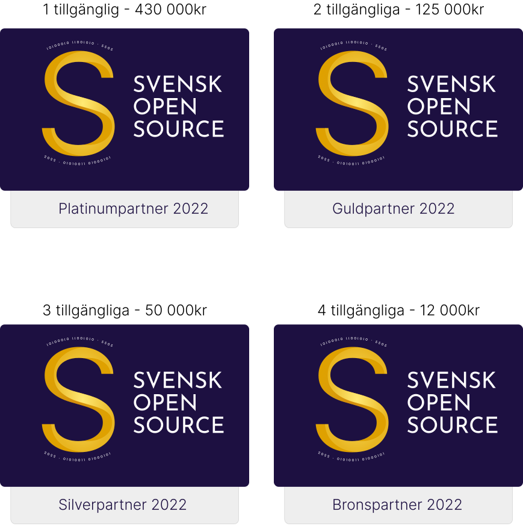

FAQ
Svensk Open Source är en organisation som ger stöd och skapar en mötesplats för dig som arbetar med open source. Vårt mål är att göra arbetet med open source hållbart, både för utvecklare och bolag.
Öppet Community
Alla utvecklare är välkomna att ansluta sig till vårt öppna community som drivs via GitHub. Där kan du be om feedback, ställa frågor och lära dig av andras arbete.
Vi jobbar på de sista detaljerna innan vi öppnar dörrarna, men använd länken nedan så bjuder vi in dig.
Gå med som utvecklareAnsök om att bli sponsrad
Varje vår/höst-säsong accepteras ansökningar att bli sponsrad för sitt arbete på ett projekt. Vid ansökan kvalitetsgranskas projektet och arbetet av en grupp seniora utvecklare. Sponsring kräver alltid en motprestation, som att presentera sponsorer på projektets GitHub-sida eller hemsida.
Känner du någon som borde vara sponsrad?
Vi vill ha kontakt med alla som bidrar till open source. Skicka en länk till en profil, t.ex. Github, Twitter eller LinkedIn och en kort motivering till dev@svenskopensource.se.
Jag har fler frågor...
Bra, för vi har mer att berätta. Kika gärna i vår FAQ eller hör av dig till oss på dev@svenskopensource.se.

Anders Åberg, grundare
Behovet för Svensk Open Source blev tydligt när mitt open source-projekt växte globalt. Det gick från att vara ett hobbyprojekt till ett ansvar och då är det viktigt att kunna prioritera och låta projektet ta plats i livspusslet.
Som partner är du med möjliggör världsledande innovation.
 GitHub
GitHub
Founding partners



För dig som är open source-utvecklare
Svensk Open Source är en organisation som ger stöd och skapar en mötesplats för dig som arbetar med open source. Vårt mål är att göra arbetet med open source hållbart, både för utvecklare och bolag.
Öppet Community
Alla utvecklare är välkomna att ansluta sig till vårt öppna community som drivs via GitHub. Där kan du be om feedback, ställa frågor och lära dig av andras arbete.
Gå med som utvecklareAnsök om att bli sponsrad
Varje vår/höst-säsong accepteras ansökningar att bli sponsrad för sitt arbete på ett projekt. Vid ansökan kvalitetsgranskas projektet och arbetet av en grupp seniora utvecklare. Sponsring kräver alltid en motprestation, som att presentera sponsorer på projektets GitHub-sida eller hemsida.
Känner du någon som borde vara sponsrad?
Vi vill ha kontakt med alla som bidrar till open source. Skicka en länk till en profil, t.ex. Github, Twitter eller LinkedIn och en kort motivering till dev@svenskopensource.se.
Ansök om sponsoring
För dig som är open source-utvecklare
Svensk Open Source är en organisation som ger stöd och skapar en mötesplats för dig som arbetar med open source. Vårt mål är att göra arbetet med open source hållbart, både för utvecklare och bolag.
Öppet Community
Alla utvecklare är välkomna att ansluta sig till vårt öppna community som drivs via GitHub. Där kan du be om feedback, ställa frågor och lära dig av andras arbete.
Ansök om att bli sponsrad
Varje vår/höst-säsong accepteras ansökningar att bli sponsrad för sitt arbete på ett projekt. Vid ansökan kvalitetsgranskas projektet och arbetet av en grupp seniora utvecklare. Sponsring kräver alltid en motprestation, som att presentera sponsorer på projektets GitHub-sida eller hemsida.
Känner du någon som borde vara sponsrad?
Vi vill ha kontakt med alla som bidrar till open source. Skicka en länk till en profil, t.ex. Github, Twitter eller LinkedIn och en kort motivering till dev@svenskopensource.se.